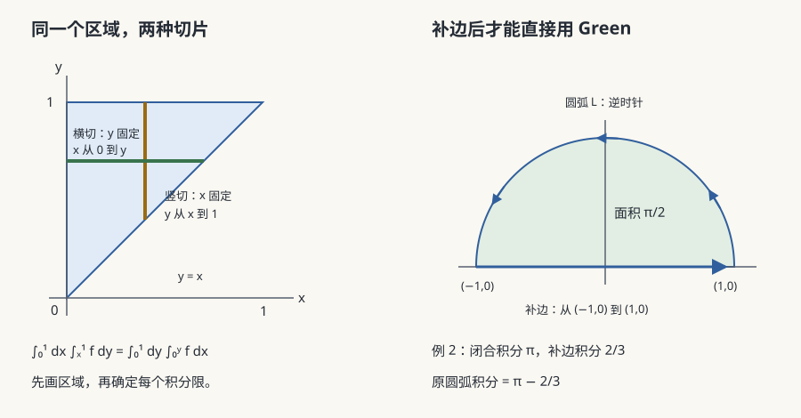

数分 VI · 多元积分学
数学分析的终章：积分从区间推广到平面区域、空间体、曲线与曲面，最后 Green–Gauss–Stokes 三大公式把"区域内部的积分"与"边界上的积分"接通——它们是 Newton–Leibniz 公式在高维的化身，也是现代数学"边界算子与微分算子对偶"思想的第一次露面。
1. 重积分

定义：与一元同构（分割 → 乘测度 → 求和 → 取极限）。有界闭区域上连续函数可积。
计算三板斧：
① 化累次（Fubini）：\(X\)-型区域 \(\iint_D f\,d\sigma = \int_a^b dx \int_{y_1(x)}^{y_2(x)} f\,dy\)。交换积分次序是高频操作：画出区域→按另一变量重新描述边界（有些积分只有换序后才积得动，如 \(\int_0^1 dx\int_x^1 e^{-y^2}dy\)）。
② 变量替换：
Jacobi 行列式 = 局部面积缩放率（🔗 与数分 V 隐函数定理、概率页"随机变量变换的密度公式"、归一化流同源）。极坐标 \(dx\,dy = r\,dr\,d\theta\)；柱坐标 \(dV = r\,dr\,d\theta\,dz\)；球坐标 \(dV = \rho^2\sin\varphi\,d\rho\,d\varphi\,d\theta\)。
③ 对称性：区域对称 + 被积函数奇偶性，先砍再算；轮换对称性（\(x,y,z\) 地位对等时 \(\iiint x^2 = \frac13\iiint(x^2+y^2+z^2)\)）。
名例（高斯积分）：\(I = \int_{-\infty}^\infty e^{-x^2}dx\)，则 \(I^2 = \iint e^{-(x^2+y^2)}dx\,dy \xrightarrow{\text{极坐标}} \int_0^{2\pi}\!\!\int_0^\infty e^{-r^2} r\,dr\,d\theta = \pi\)，故 \(I = \sqrt\pi\)。🔗 概率论正态分布的入场券。
2. 曲线积分
第一类（对弧长，标量场）：\(\int_L f\,ds\)，物理原型是曲线质量。计算：参数化后 \(ds = \sqrt{x'^2 + y'^2}\,dt\)。与方向无关。
第二类（对坐标，向量场）：\(\int_L P\,dx + Q\,dy = \int_L \mathbf{F}\cdot d\mathbf{r}\)，物理原型是做功。与方向有关（反向变号）。计算：参数化直接代入。
两类关系：\(\int_L \mathbf F \cdot d\mathbf r = \int_L (\mathbf F \cdot \boldsymbol\tau)\,ds\)（\(\boldsymbol\tau\) 为单位切向量）。
3. 曲面积分
第一类（对面积）：\(\iint_S f\,dS\)，\(z = z(x,y)\) 时 \(dS = \sqrt{1 + z_x^2 + z_y^2}\,dx\,dy\)。
第二类（对坐标，通量）：\(\iint_S \mathbf F \cdot d\mathbf S = \iint_S \mathbf F\cdot\mathbf n\,dS\)，物理原型是流量穿过曲面。依赖侧的选取（法向定向）。计算：投影法逐分量，或统一化为第一类。
4. 三大公式（本页顶点）
定理（Green 公式） \(D\) 为平面单连通区域，边界 \(\partial D\) 取正向（逆时针）：
定理（Gauss 公式 / 散度定理） \(\Omega\) 为空间闭区域，\(\partial\Omega\) 取外侧：
定理（Stokes 公式） 曲面 \(S\) 以 \(\partial S\) 为边界（定向右手一致）：
统一读法：三条都是
——Newton–Leibniz（\(\int_a^b F' = F(b) - F(a)\)：区域 = 区间，边界 = 两个端点）的高维推广；在微分形式语言下三者是同一条广义 Stokes 公式 \(\int_M d\omega = \int_{\partial M} \omega\)（微分几何页的预告）。
使用心法：封闭曲线/曲面上的第二类积分，几乎总是转体积分/二重积分更好算；不封闭就补面封闭再减掉补的部分（考试母题）；被积函数在内部有奇点（如 \(\frac{-y\,dx + x\,dy}{x^2+y^2}\) 围原点）时不能直接用，挖洞处理。
5. 保守场与路径无关
平面单连通区域上，下列等价：
\(u\) 称势函数（求法：偏积分或折线路径积分）。空间版本条件为 \(\nabla\times\mathbf F = 0\)。单连通不可省（上面挖洞的反例正是 \(Q_x = P_y\) 但环积分 \(= 2\pi \neq 0\)——拓扑第一次实质性介入分析，拓扑页的伏笔）。
场论速查：梯度 \(\nabla f\)（标量→向量）、散度 \(\nabla\cdot\mathbf F\)（向量→标量，源强度）、旋度 \(\nabla\times\mathbf F\)（向量→向量，涡强度）；恒等式 \(\nabla\times(\nabla f) = 0\)、\(\nabla\cdot(\nabla\times\mathbf F) = 0\)；\(\nabla\cdot\nabla f = \Delta f\)（Laplace 算子，PDE 页的主角）。
6. 典型例题
例 1（换序救场） 计算 \(\int_0^1 dx\int_x^1 e^{-y^2}dy\)。 解：\(e^{-y^2}\) 无初等原函数，换序：区域为 \(0\leq x\leq y\leq 1\)，\(= \int_0^1 e^{-y^2}\Big(\int_0^y dx\Big)dy = \int_0^1 y e^{-y^2}dy = \frac{1 - e^{-1}}{2}\)。
例 2（Green 公式 + 补线） 计算 \(\int_L (x^2 - y)\,dx + (x + \sin y)\,dy\)，\(L\) 为上半圆 \(y = \sqrt{1 - x^2}\) 从 \((1,0)\) 到 \((-1,0)\)。 解：补线段 \(\overline{(-1,0)(1,0)}\) 成闭合（注意方向凑成正向），Green：\(Q_x - P_y = 1 - (-1) = 2\)，\(\oint = 2 \cdot \frac{\pi}{2} = \pi\)。再减补线贡献：线段上 \(y = 0, dy = 0\)，\(\int_{-1}^{1} x^2 dx = \frac23\)。故原积分 \(= \pi - \frac23\)。
例 3（Gauss 公式） 求 \(\oiint_S (x\,dy\,dz + y\,dz\,dx + z\,dx\,dy)\)，\(S\) 为球面 \(x^2+y^2+z^2 = R^2\) 外侧。 解：散度 \(= 3\)，Gauss 给 \(3 \cdot \frac43\pi R^3 = 4\pi R^3\)。（顺带记住：这个积分 \(= 3V\)，是"用边界积分算体积"的通用公式。）\(\blacksquare\)
数学分析六页至此闭环。代数与几何线从多项式开始——高等代数 I。